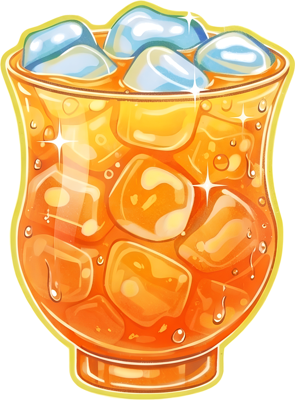

Botany & produce notes
Fruitpedia facts are summarized from botanical and agricultural references.
Encyclopaedia Britannica · Pineapple ↗Encyclopaedia Britannica · Strawberry ↗UF/IFAS · Pineapple ↗Discover fresh juice recipes, unexpected fruit combinations, and little facts that make every sip more interesting.

A bright, citrusy blend with lime and ginger. Use fresh orange segments for a thicker smoothie-style sip, or juice them for a lighter pour.
Sweet, zippy, creamy, or a little bit wild. Take a shortcut to your next favorite.
Tap to get a tiny dose of fruit lore.
Explore JUICY recipes, build a drink from ingredients you have, and learn about fruit flavor, nutrition basics, storage, and botanical facts.
Three quick picks. One very good next sip.
Tap what you have hanging around. We'll dream up a blend that makes sense of it all.
Start with fruit, then add a liquid, extras, and ice if you like.
Tap ingredients to load their colors into the blender. Then mix them into a glass of something good.
Meet the delicious overachievers of the produce aisle. Little facts, helpful nutrition notes, and absolutely no lectures.
Tiny brain break? Test your fruit knowledge, collect a few points, and take another swing whenever you like.
30 QUESTIONS · PICK ONE ANSWER EACH ROUND
Meet the six-person team behind JUICY: a final IT exam project for Media Production at Universitas Indonesia.
MADE WITHWe love drinking juice, and we kept wondering what else could go into a glass: which fruits work well together, how a recipe comes together, and what its nutrition might look like. With guidance from Bern Jonathan M.T.I., we created JUICY for our final IT exam project in Media Production at Universitas Indonesia. It brings recipe discovery, fruit information, and playful ways to experiment into one place—because we wanted those parts of the juice experience to be easier to explore together.
ABOUT THE NUTRITION DETAILS
Nutrition values are general estimates for learning and comparison, based on the listed ingredient quantities and reference food data. Actual values vary with fruit size, brands, substitutions, and serving size. They are not medical or dietary advice.
We use these references to ground fruit facts, recipe ideas, and nutrition estimates. JUICY’s recipes are student adaptations, and the interactive activities are designed for casual learning.
Fruitpedia facts are summarized from botanical and agricultural references.
Encyclopaedia Britannica · Pineapple ↗Encyclopaedia Britannica · Strawberry ↗UF/IFAS · Pineapple ↗Recipe proportions are informed by published smoothie recipes and technique guides. Nutrition estimates refer to ingredient quantities and USDA food composition entries.
Love & Lemons · Strawberry banana smoothie ↗BBC Good Food · Smoothie method ↗USDA FoodData Central ↗Recipes, fruit profiles, and game prompts are designed to make this student project useful, clear, and enjoyable to explore. Blend suggestions are creative starting points, so adjust ingredients to your own taste.
The mixer and fruit-match suggestions are curated with simple ingredient-pairing rules; they are creative prompts, not clinical recommendations. Recipes and summaries are presented for educational use. We link to the original references so you can read more and check the context.
Six teammates, one shared love of fresh ideas. Hover or focus a portrait to bring each member forward.